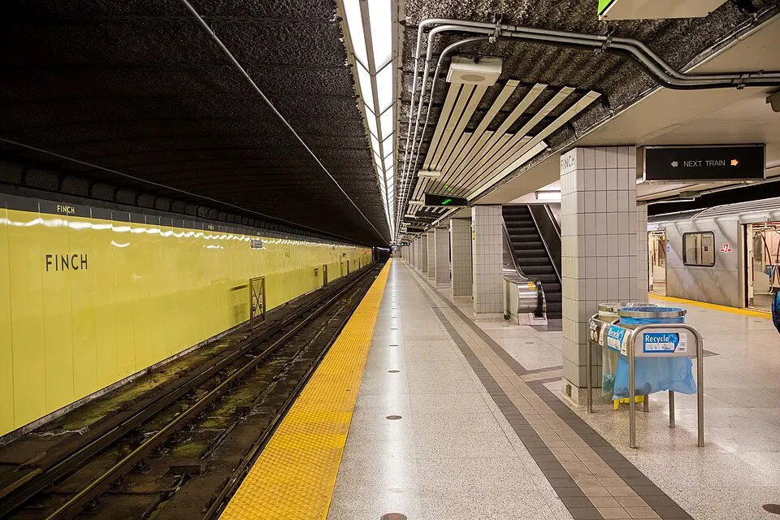

Signal
SignalStation atlas / Finch
Station history
Finch


Station history
Finch became the northern Yonge terminus on the original subway’s twentieth anniversary. Land in the hydro corridor helped make room for commuter parking.
Rio Algom donated Krystyna Sadowska’s metal sculpture Rhythm of Exotic Plants to the TTC. Riders encounter the artwork on the station mezzanine.